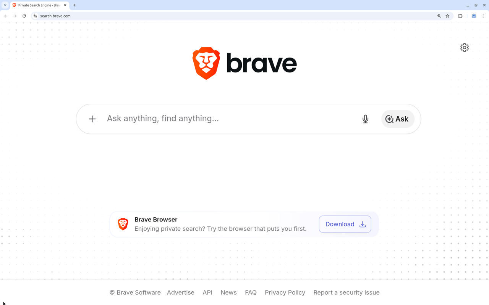
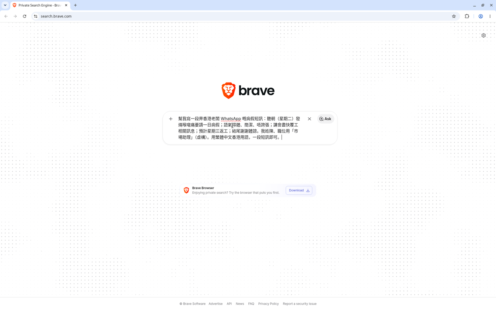
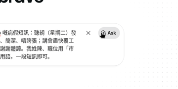
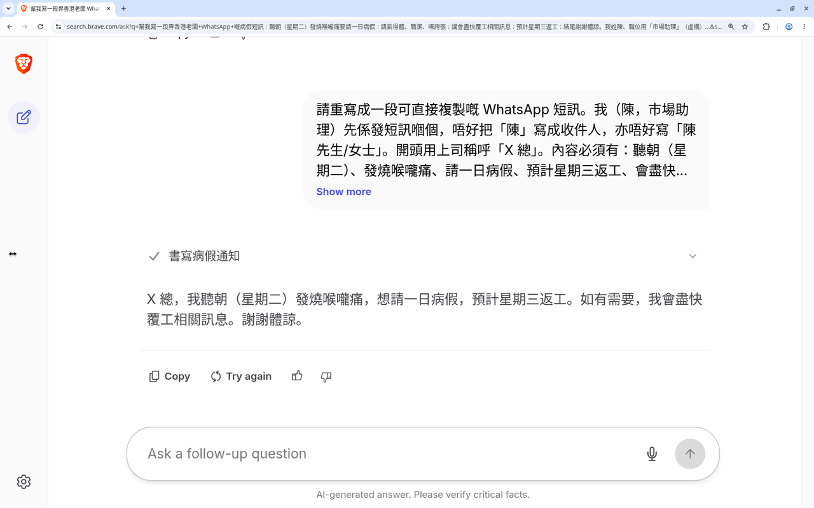
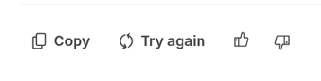

聽朝要請病假，空白稿怕語氣太隨便。第44集用 Brave Ask（search.brave.com 上面嘅 Ask，結果頁頂部畫面多數寫 Ask Brave）：開 search.brave.com，打一段得體短訊提示，撳搜尋列入面嘅 Ask，讀完先抄去老闆 WhatsApp。示範人物係陳，職位市場助理。聽朝（星期二）發燒、喉嚨痛，請一日病假，預計星期三返工。人物同病況虛構，無真實姓名、無真實老闆。呢頁教你出短訊草稿。唔係醫療建議，亦唔係公司病假政策。逐步畫面喺下面。呢頁唔另抄生成句子，短訊以你當日畫面為準。
Reel 一句講晒：Brave Ask｜病假短訊／得體 WhatsApp
你會學到
- 點樣開 search.brave.com，認出要撳嘅 Ask 喺搜尋列入面（唔係 Search，亦唔係 Brave 側欄）
- 點樣打「陳、市場助理、聽朝星期二發燒喉嚨痛請一日、預計星期三返工」提示
- 點樣喺結果頁（頂部係 Ask Brave）讀完短訊，先抄去老闆 WhatsApp
開始前準備
- 用瀏覽器開 search.brave.com。Brave Ask 喺呢個搜尋頁。要撳嘅 Ask 喺搜尋列入面，唔係 Search，亦唔係 Brave 側欄。說明見 search.brave.com/help/ai。任何瀏覽器都開到。登入同用量以你當日畫面為準
- 先寫低你真係要請嘅日子同返工日。下面示範：聽朝星期二請一日，預計星期三返工，原因係發燒同喉嚨痛。人物係陳，職位市場助理，全屬虛構。真實姓名、電話、地址、醫生紙編號先改走
- 知道稿只係起稿。抄去 WhatsApp 之前讀一次。AI 可能錯。呢頁唔係醫療建議，亦唔係叫你用呢段短訊代替醫生或者公司指定請假程序
可抄提示
示範提示（虛構：陳、市場助理；聽朝星期二請一日，預計星期三返工）
我係陳，職位係市場助理。聽朝（星期二）發燒、喉嚨痛，要請一日病假，預計星期三返工。 請用繁體中文（香港用語）寫一段得體、簡潔嘅 WhatsApp 短訊畀老闆：講明請假日子、原因（發燒同喉嚨痛）、預計返工日。 唔好加假電話、假地址、假醫生紙編號，亦唔好寫成醫療建議或者公司假期政策。人物同病況都係虛構示範。
你自己用就換走名字、職位、請假日同返工日。出嚟嘅短訊要自己讀。AI 加咗你冇寫嘅電話、地址、醫生紙編號、診斷或者假期日數，先刪走。
3 步做法
路徑跟第40集已核實嘅 Brave Ask：開 search.brave.com，撳搜尋列入面嘅 Ask（唔係 Search），結果頁頂部係 Ask Brave。介面如果更新，以你當日畫面為準。
-
開 search.brave.com：用瀏覽器開 search.brave.com。呢步係開 Brave Search 網頁，唔係開 Brave 側欄。要認嘅 Ask 喺搜尋列入面。未打提示之前，停喺空白搜尋頁。
第40集畫面搜尋列預設字係「Ask anything, find anything…」。介面如果更新，以你當日畫面為準。

第 1 步：未打提示。搜尋列預設字係「Ask anything, find anything…」。Ask 喺搜尋列右邊。 -
打提示，撳 Ask：將上面示範提示打入搜尋列，再撳搜尋列入面嘅 Ask（唔係 Search）。有真實姓名、電話、地址或者醫生紙編號，撳 Ask 之前先改走。
等結果頁出齊先再讀。呢頁唔另抄生成句子。

第 2 步：提示打好。人物係陳，市場助理。未撳 Ask。 
可選中段：提示打好後，撳搜尋列右邊 Ask（呢格係 composer 路徑，唔係結果頁底下追問列）。 -
讀完再抄去 WhatsApp：結果頁頂部係 Ask Brave。讀一次：名字係咪陳（或者你換咗嘅名）、請假係咪聽朝星期二一日、返工係咪星期三、原因係咪只得發燒同喉嚨痛。對得上先抄去老闆 WhatsApp。
AI 加咗電話、地址、醫生紙編號、多幾日假，或者寫成醫療建議、公司假期政策，呢啲提示冇要求，先刪走。呢步係你自己覆老闆，唔係叫人轉發呢則片。呢頁唔另抄生成句子。

第 3 步：結果頁頂部係 Ask Brave。草稿開頭 X 總，寫聽朝（星期二）請一日，預計星期三返工，結尾謝謝體諒。讀完先抄。 
可選特寫：Copy 同 Try again 按鈕列。唔係第 4 步。
常見錯誤／注意事項
- 開咗 Leo 側欄：本集用 search.brave.com 嘅 Ask。Brave 瀏覽器側欄唔係呢步。
- 撳錯 Search：要撳搜尋列入面嘅 Ask（唔係 Search）。
- 當示範係真實員工：陳、市場助理、星期二發燒喉嚨痛、星期三返工，都係拍片用。無真實姓名、無真實老闆。
- 當短訊係醫療建議：原因只係短訊入面要講嘅一句。呢頁唔判斷病情，亦唔教你點醫。唔舒服就問醫生。
- 當短訊係公司病假政策：請幾多日、使唔使醫生紙、交俾邊個，跟你公司自己嘅做法。AI 加咗嘅假期規則先刪走。
- 見第一句就貼去 WhatsApp：等短訊出齊，對一次日子同原因先抄。
- 貼真實個人資料：電話、地址、醫生紙編號、病歷先刪走，再打提示。
- 當呢頁係叫你轉發片：可以傳嘅係你讀過嘅短訊。呢頁唔係叫你轉發呢則片。
示範人物虛構。短訊係起稿。AI 可能錯。呢頁唔係醫療建議，亦唔係公司病假政策。貼去老闆 WhatsApp 之前自己讀一次。
香港用戶留意
開 search.brave.com 就有 Brave Ask，任何瀏覽器都得。要認嘅係搜尋列入面嘅 Ask（唔係 Search）。結果頁頂部係 Ask Brave。官方說明喺 search.brave.com/help/ai，頁面叫呢個功能 Ask Brave，本集跟系列叫 Brave Ask。短訊用繁體中文香港用語，讀完先送。密碼喺網頁（個人檔連結）。呢頁教你出短訊，唔係叫你轉發呢則片。
官方說明
- Brave Ask（search.brave.com）
本集第一步開呢頁。撳搜尋列入面嘅 Ask（唔係 Search）先至係 Brave Ask。結果頁頂部係 Ask Brave。第40集 2026-10-18 核實過同一條路徑。介面如果更新，以你當日畫面為準 - AI in Brave Search（search.brave.com/help/ai）
Brave Search 嘅 AI 說明。頁面叫呢個功能 Ask Brave，本集跟 Reel 叫 Brave Ask。第40集頁面寫明 Ask 可以出較長答案，同埋可以追問。以你當日說明頁為準
（Brave Ask 路徑跟第40集 2026-10-18 已核實嘅 search.brave.com：搜尋列入面嘅 Ask、結果頁頂部 Ask Brave。介面可能更新，以你當日畫面為準）
原帖
睇原 Reel ↗（2026-10-26 發佈）